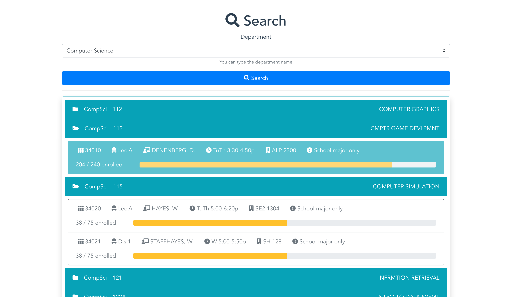

Projects
Zot Planner
I used to use a website called CourseEater to plan my classes for the next quarter at UCI. Unfortunately, it was retired, so I decided to build my own. It was really motivating to work on a project that has a very practical use for me. I was able to test it right before registering for classes in the Fall, and it was a success! Hopefully, I can get some friends to use it for the next quarter.


The backend is a RESTful API built in Python, using the Flask framework. In order to get the class data, I had to scrape UCI's schedule of classes using Beautiful Soup 4. This was the most challenging part because the data is not formatted very easily. My goal was to make the data easy to understand, so it had to be cleaned up a bit. The database uses PostgreSQL and is interacted with through SQLAlchemy. The frontend is built using VueJS. While I still have some tweaks that I want to make for the website to be more polished, I'm very pleased with the result!
Gerry Minor's Fine Art
My grandma wanted a way to share all of her drawings and paintings with her friends. I figured it was a good project to get real world experience working with a client. This project has improved my skills working with HTML, CSS, and JavaScript.

Games on itch.io
This is where I host the video games I worked on. At the moment all of my games on itch.io have been built using the Unity game engine. I was the team lead and a programmer for "Herlock Sholmes". I was a programmer for "LitestD". Both of these games were created while in the Video Game Development Club (VGDC) at UC Irvine. This club splits its members into teams to work on quarter-long games. There are also various workshops throughout the year. "Light Ranger" was created in a one-week game jam. I was the only one who worked on it.
Kewayy - Quality Assurance Software
I was inspired to create this project at work because we were using Google Docs and Google Sheets to do our QA testing. While those give you lots of freedom, having some restrictions with added functionality would greatly improve productivity. I was interested in learning Django because it has many useful features to expedite the creation of data-driven websites. I also like using Python... This project has been a great experience so far, and I look forward to continuing working on it.
Tic Tac Toe
This was my first time creating an AI for a game. I wrote the AI in JavaScript using depth-first search. It was very difficult to wrap my head around how AI's and DFS works, but I finally got it to function properly. I still have a lot to learn and understand. Have fun trying to beat it! ;)
Modular Multiplication
I saw this on a youtube video and decided to recreate it myself. The points slider changes how many points are around the circle. The multiplier slider tells the program where to draw a line to. For example, if the multiplier is 2 then point 3 will draw a line to point 6. Some cool patterns will emerge!
Solitaire
I created solitaire the card game in python using pygame. I challenge I had at the time was creating the undo/redo system. I eventually made it work by saving only the essential data of the game state. The fact that this is a single player game made it much more enjoyable to test. Have fun!